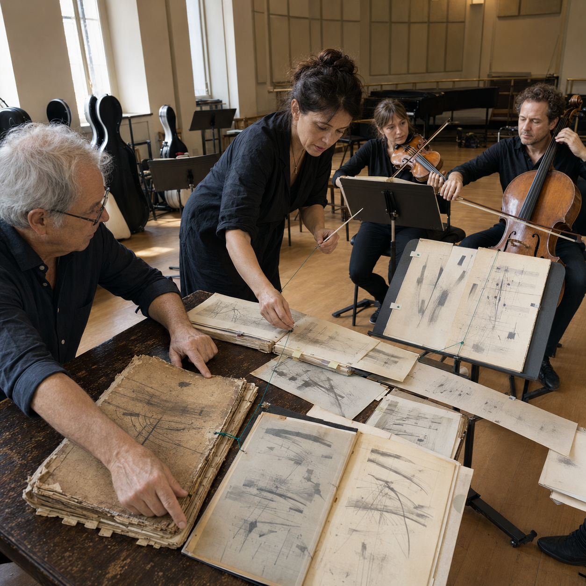

Starts fromAn idea or goal to develop together

SCN-043 · Collaborate & Create
Represent the genealogy of versions in a shared creation
A musical work designed to evolve can lose its lineage whenever a new performance appears definitive. Koali shows inherited motifs, choices, and branches, so each orchestra can fork the work deliberately and leave richer possibilities for the next.
ExampleCompose a Work That Refuses a Final Version
FindUnderstandLearnCollaborateChooseActRespondRemember
← Back to the full MosaicWhat breaks without continuity
A new performance looks definitive when its lineage, choices, and branches are not preserved.
System path
Konnaxion → keenKonnect → KonstructKonnaxion → Kreative → KontactKristal
How it moves
source work → interpretation → choices → branch → performance → new branch
Also useful forMusic · Open Source Software · Collaborative Creation